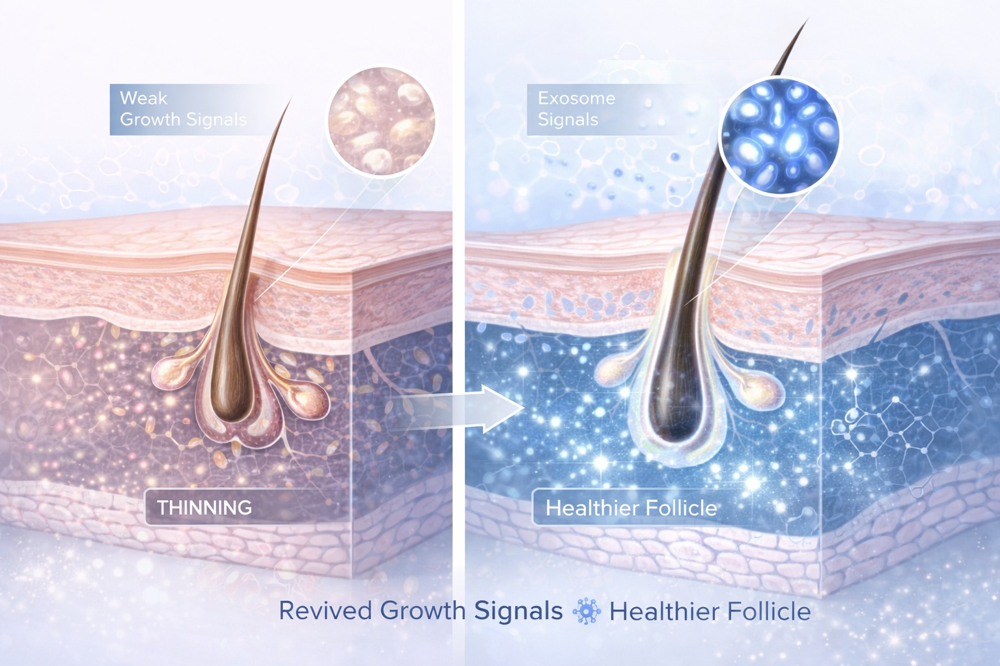

גישה רפואית מבוססת אבחון לעצירת נשירה ועידוד צמיחה
נשירת שיער היא תופעה שכיחה המשפיעה על גברים ונשים כאחד — אך הגורמים לה שונים ומגוונים. לכן, הטיפול היעיל ביותר מתחיל תמיד באבחון מקצועי של הסיבה, ורק לאחריו בניית פרוטוקול טיפול מותאם אישית.
ברויאל-מד אנו מטפלים בנשירת שיער בגישה מקיפה — לא רק עוצרים את הנשירה, אלא מחדשים את פעילות הזקיקים ומשקמים את איכות השיער.
הסוג הנפוץ ביותר — מופיע בגברים ובנשים. נובע מרגישות הזקיקים להורמוני DHT. מתאפיין בדילול הדרגתי.
דילול אחיד בכל הראש. לרוב קשור למחסור תזונתי, לחץ ממושך, שינויים הורמונליים או מחלות.
נשירה פתאומית לאחר אירוע מלחיץ, מחלה, לידה, ניתוח. בדרך כלל הפיכה אם מטפלים בזמן.
קשורה לשינויים בגיל המעבר, תירואיד, הפסקת גלולות וגורמים הורמונליים נוספים.

נשירה שמטופלת ללא אבחון עלולה:
ככל שמאבחנים ומטפלים מוקדם יותר — כך הסיכוי לשמר ולהחזיר את השיער גבוה יותר.
בקליניקה אנו עובדים בפרוטוקול מותאם אישית שכולל:
כל פרוטוקול מתחיל באבחון מקצועי שמגדיר את הגורם האמיתי. כך הטיפול ממוקד, יעיל ומדויק — ולא גנרי.
להתאמת פרוטוקול אישי על בסיס אבחון מקצועי — ניתן לתאם שיחת ייעוץ ללא עלות וללא התחייבות.
תיאום תור טלפוני ללא עלות